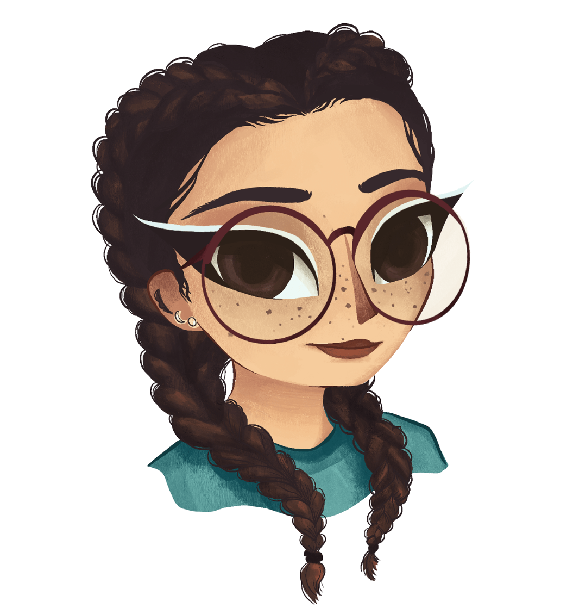

I’m a Madrid-based illustrator and graphic designer working at the seam where pictures meet systems.
For nearly a decade I’ve moved between two crafts that most people keep apart: the warm, hand-drawn world of illustration and the structured, grid-driven world of graphic design. I don’t think they’re opposites — a good identity needs a soul, and a good drawing needs a frame.
I work with publishers, studios, festivals and brands who want work that feels made by a person. Everything you see here is a placeholder, ready to be replaced with the real archive.
Every project starts on paper. I chase the idea by hand before a single pixel is placed, so the concept leads and the craft follows.
Whether it’s a character or a brand, I look for the underlying rules — a grid, a palette, a logic — so the work can grow without falling apart.
I protect the small imperfections that make work feel human. Texture, weight and rhythm survive all the way to the final file.